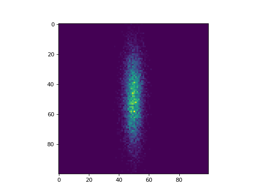
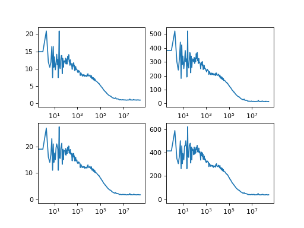

Benchmarks¶
Reading TTTR files¶
Creating Histograms¶
import timeit
import tttrlib
import numpy as np
import pylab as p
def histogram2d(data, bins):
h = tttrlib.doubleHistogram()
h.setAxis(0, "x", -3, 3, bins, 'lin')
h.setAxis(1, "y", -3, 3, bins, 'lin')
h.setData(data.T)
h.update()
return h.getHistogram().reshape((bins, bins))
print("\n\nTesting 2D Histogram linear spacing")
print("---------------------------------------")
x = np.random.randn(10000)
y = 0.2 * np.random.randn(10000)
data = np.vstack([x, y])
bins = 100
hist2d = histogram2d(data, 100)
p.imshow(hist2d)
p.show()
(Source code, png, hires.png, pdf)
{kind=link}
{kind=link}

Correlation analysis¶
import pylab as p
import tttrlib
import numpy as np
fig, ax = p.subplots(nrows=2, ncols=2)
# Read the data data
data = tttrlib.TTTR('../../examples/BH/BH_SPC132.spc', 'SPC-130')
# Create correlator
B = 9
n_casc = 25
correlator = tttrlib.Correlator()
correlator.set_n_bins(B)
correlator.set_n_casc(n_casc)
# Select the green channels (channel number 0 and 8)
ch1_indeces = data.get_selection_by_channel(np.array([0]))
ch2_indeces = data.get_selection_by_channel(np.array([8]))
mt = data.get_macro_time()
t1 = mt[ch1_indeces]
w1 = np.ones_like(t1, dtype=np.float)
t2 = mt[ch2_indeces]
w2 = np.ones_like(t2, dtype=np.float)
correlator.set_events(t1, w1, t2, w2)
correlator.run()
x = correlator.get_x_axis_normalized()
y = correlator.get_corr_normalized()
ax[0, 0].semilogx(x, y)
# Discriminate low count rates
mt = data.get_macro_time()
t1 = mt[ch1_indeces]
w1 = np.ones_like(t1, dtype=np.float)
cr_selection = tttrlib.selection_by_count_rate(t1, 1200000, 30)
w1[cr_selection] *= 0.0
t2 = mt[ch2_indeces]
w2 = np.ones_like(t2, dtype=np.float)
cr_selection = tttrlib.selection_by_count_rate(t2, 1200000, 30)
w2[cr_selection] *= 0.0
correlator.set_events(t1, w1, t2, w2)
correlator.run()
x = correlator.get_x_axis_normalized()
y = correlator.get_corr_normalized()
ax[0, 1].semilogx(x, y)
# Select the green channels (channel number 0 and 8)
ch1_indeces = data.get_selection_by_channel(np.array([0, 8]))
ch2_indeces = data.get_selection_by_channel(np.array([1, 9]))
mt = data.get_macro_time()
t1 = mt[ch1_indeces]
w1 = np.ones_like(t1, dtype=np.float)
t2 = mt[ch2_indeces]
w2 = np.ones_like(t2, dtype=np.float)
correlator.set_events(t1, w1, t2, w2)
correlator.run()
x = correlator.get_x_axis_normalized()
y = correlator.get_corr_normalized()
ax[1, 0].semilogx(x, y)
# Discriminate low count rates
mt = data.get_macro_time()
t1 = mt[ch1_indeces]
w1 = np.ones_like(t1, dtype=np.float)
cr_selection = tttrlib.selection_by_count_rate(t1, 1200000, 30)
w1[cr_selection] *= 0.0
t2 = mt[ch2_indeces]
w2 = np.ones_like(t2, dtype=np.float)
cr_selection = tttrlib.selection_by_count_rate(t2, 1200000, 30)
w2[cr_selection] *= 0.0
correlator.set_events(t1, w1, t2, w2)
correlator.run()
x = correlator.get_x_axis_normalized()
y = correlator.get_corr_normalized()
ax[1, 1].semilogx(x, y)
p.show()
(Source code, png, hires.png, pdf)
{kind=link}
{kind=link}
